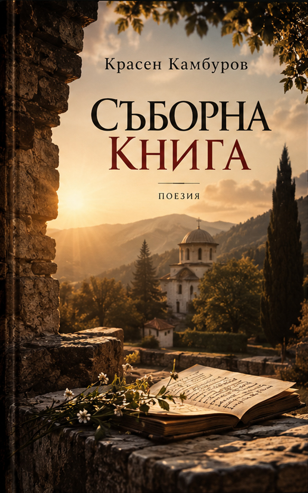

Поезия · 2016 · Красен Камбуров
Съборна книга
Поетичен събор от различни книги, години и гласове — авторски подбор на стихотворения и поеми.
Второ издание; първо електронно издание · София, 2026 · PDF ISBN 978-619-94327-0-9 · EPUB ISBN 978-619-94327-1-6

За книгата
Поезията като събор
В авторския ръкопис Красен Камбуров нарича книгата „съборна“, а не просто подборка. Тя събира редове от четиринадесет негови книги, между които „Завера“, „Клара“, „Свод“, „Оди“, „Животът на героя“, „Дати“, „Очите на Вавилон“ и „Водопадът“.
Запазени са предисловието и авторските „Бележки към ОДИ“. За новото електронно издание текстът е пренабран, като са съхранени стиховите редове и характерната авторска лексика и пунктуация.
Електронно издание · предварителни файлове
PDF и EPUB за преглед
Файловете са подготвени за редакторски преглед. За новото електронно издание са присъдени отделни номера: PDF ISBN 978-619-94327-0-9 и EPUB ISBN 978-619-94327-1-6. Окончателните файлове с вписани ISBN предстои да заменят предварителните версии на сайта.
Корицата е създадена с помощта на генеративен изкуствен интелект, по концепция и с редакторски подбор на издателя.
Предварителна версия · ISBN номерата са присъдени
Това са предварителни файлове. Подмяната им с окончателните файлове, съдържащи присъдените ISBN номера, предстои.
Още от Красен Камбуров
Към всички книги ↗